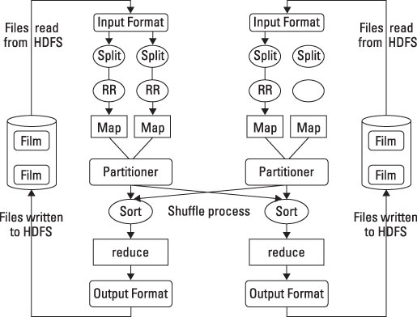

Distributed Computing made easier
Alexandre Beaulne
Agenda
- context
- theory
- libraries
- demo
Context
explosion in amount of data produced
“Every two days now we create as much information as we did from the dawn of civilization up until
2003”
-Eric Schmidt, Google's chairman, Techonomy conf, August 2010
Context
Moore's law in jeopardy

Two approaches:
- scaling vertically
- scaling horizontally
“Scaling up is trying to make a machine feel like 100,
scaling out is trying to make 100 machines feel like 1”
MapReduce: Simplified Data Processing on Large Clusters
Jeffrey Dean and Sanjay Ghemawat, 2008

2006-2011: Apache Hadoop makes the mapreduce model available to the masses

Digression
Latency Comparison Numbers
| ns | us | ms |
|---|
| L1 cache reference | 0.5 | | | |
| Branch mispredict | 5 | | | |
| L2 cache reference | 7 | | | |
| Mutex lock/unlock | 25 | | | |
| Main memory reference | 100 | | | |
| Compress 1K bytes with Zippy | 3,000 | 3 | |
| Send 1K bytes over 1 Gbps network | 10,000 | 10 | |
| Read 4K randomly from SSD* | 150,000 | 150 | |
| Read 1 MB sequentially from memory | 250,000 | 250 | |
| Round trip within same datacenter | 500,000 | 500 | |
| Read 1 MB sequentially from SSD* | 1,000,000 | 1,000 | 1 |
| Disk seek | 10,000,000 | 10,000 | 10 |
| Read 1 MB sequentially from disk | 20,000,000 | 20,000 | 20 |
| Send packet CA->Netherlands->CA | 150,000,000 | 150,000 | 150 |
Src: Software engineering advice from building large-scale distributed center, Jeffrey Dean
Digression
If L1 access is a second, then:
| L1 cache reference | 0:00:01 |
| Branch mispredict | 0:00:10 |
| L2 cache reference | 0:00:14 |
| Mutex lock/unlock | 0:00:50 |
| Main memory reference | 0:03:20 |
| Compress 1K bytes with Zippy | 1:40:00 |
| Send 1K bytes over 1 Gbps network | 5:33:20 |
| Read 4K randomly from SSD | 3 days, 11:20:00 |
| Read 1 MB sequentially from memory | 5 days, 18:53:20 |
| Round trip within same datacenter | 11 days, 13:46:40 |
| Read 1 MB sequentially from SSD | 23 days, 3:33:20 |
| Disk seek | 231 days, 11:33:20 |
| Read 1 MB sequentially from disk | 462 days, 23:06:40 |
| Send packet CA->Netherlands->CA | 3472 days, 5:20:00 |
Src: Software engineering advice from building large-scale distributed center, Jeffrey Dean
2009-2014: Apache Spark released by Amplab at UC Berkeley
Objectives:
- Avoid disk reads whenever possible
- Support flexible workflows
- Offers simple interfaces for a wide range of users
RDD
- Resilient Distributed Dataset
- RDDs are logical collections of data partitioned across machines
- RDDs are the essence of Spark
- RDDs are the interface to your data
- RDDs are immutable
- RDDs are lazily evaluated
Input/Output
- Txt, CSV, JSON
- HDFS
- JDBC, HBase, Cassandra
- many more!
RDD
- Two types of operations on RDDs:
| Transformations |
|
Actions |
- map()
- filter()
- flatMap()
- sample()
- distinct()
- sortByKey()
- union()
- intersection()
- substract()
- join()
- cartesian()
|
|
- collect()
- count()
- countByValue()
- take()
- reduce()
- saveAsTextFile()
|
Quick Example
$ head nasa.log
in24.inetnebr.com - - [01/Aug/2015:00:00:01 -0400] "GET /shuttle/missions/sts-68/news/sts-68-mcc-05.txt HTTP/1.0" 200 1839
uplherc.upl.com - - [01/Aug/2015:00:00:07 -0400] "GET / HTTP/1.0" 304 0
uplherc.upl.com - - [01/Aug/2015:00:00:08 -0400] "GET /images/ksclogo-medium.gif HTTP/1.0" 304 0
uplherc.upl.com - - [01/Aug/2015:00:00:08 -0400] "GET /images/MOSAIC-logosmall.gif HTTP/1.0" 304 0
uplherc.upl.com - - [01/Aug/2015:00:00:08 -0400] "GET /images/USA-logosmall.gif HTTP/1.0" 304 0
ix-esc-ca2-07.ix.netcom.com - - [01/Aug/2015:00:00:09 -0400] "GET /images/launch-logo.gif HTTP/1.0" 200 1713
uplherc.upl.com - - [01/Aug/2015:00:00:10 -0400] "GET /images/WORLD-logosmall.gif HTTP/1.0" 304 0
slppp6.intermind.net - - [01/Aug/2015:00:00:10 -0400] "GET /history/skylab/skylab.html HTTP/1.0" 200 1687
piweba4y.prodigy.com - - [01/Aug/2015:00:00:10 -0400] "GET /images/launchmedium.gif HTTP/1.0" 200 11853
slppp6.intermind.net - - [01/Aug/2015:00:00:11 -0400] "GET /history/skylab/skylab-small.gif HTTP/1.0" 200 9202
Quick Example
$ pyspark
Welcome to
____ __
/ __/__ ___ _____/ /__
_\ \/ _ \/ _ `/ __/ '_/
/__ / .__/\_,_/_/ /_/\_\ version 1.6.0
/_/
>>>
Quick Example
>>> log_rdd = sc.textFile('nasa.log')
>>> tokens_rdd = log_rdd.map(lambda line: line.split(' '))
>>> hours_rdd = tokens_rdd.map(lambda tokens: datetime.strptime(tokens[3], '[%d/%b/%Y:%H:%M:%S').hour)
>>> hours_rdd.countByValue()
{0: 47862, 1: 38531, 2: 32508, 3: 29995, 4: 26756, 5: 27587, 6: 31287, 7: 47386, 8: 65443, 9: 78695, 10: 88309, 11: 95344, 12: 105143, 13: 104536, 14: 101394, 15: 109465, 16: 99527, 17: 80834, 18: 66809, 19: 59315, 20: 59944, 21: 57985, 22: 60673, 23: 54570}
Persistence
- By default, complete RDD lineage are recomputed when an action is called on them
- persist() action comes in handy when we know work will be done repeatedly on an RDD
- RDD can be persisted either in-memory or on disk
- cache() is an alias for persisting in-memory
Quick Example
>>> log_rdd = sc.textFile('nasa.log')
>>> tokens_rdd = log_rdd.map(lambda line: line.split(' '))
>>> hours_rdd = tokens_rdd.map(lambda tokens: datetime.strptime(tokens[3], '[%d/%b/%Y:%H:%M:%S').hour)
>>> hours_rdd.countByValue()
{0: 47862, 1: 38531, 2: 32508, 3: 29995, 4: 26756, 5: 27587, 6: 31287, 7: 47386, 8: 65443, 9: 78695, 10: 88309, 11: 95344, 12: 105143, 13: 104536, 14: 101394, 15: 109465, 16: 99527, 17: 80834, 18: 66809, 19: 59315, 20: 59944, 21: 57985, 22: 60673, 23: 54570}
>>> hours_rdd.distinct().collect()
[0, 2, 4, 6, 8, 10, 12, 14, 16, 18, 20, 22, 1, 3, 5, 7, 9, 11, 13, 15, 17, 19, 21, 23]
Quick Example
>>> log_rdd = sc.textFile('nasa.log')
>>> tokens_rdd = log_rdd.map(lambda line: line.split(' '))
>>> hours_rdd = tokens_rdd.map(lambda tokens: datetime.strptime(tokens[3], '[%d/%b/%Y:%H:%M:%S').hour)
>>> hours_rdd.cache()
>>> hours_rdd.countByValue()
{0: 47862, 1: 38531, 2: 32508, 3: 29995, 4: 26756, 5: 27587, 6: 31287, 7: 47386, 8: 65443, 9: 78695, 10: 88309, 11: 95344, 12: 105143, 13: 104536, 14: 101394, 15: 109465, 16: 99527, 17: 80834, 18: 66809, 19: 59315, 20: 59944, 21: 57985, 22: 60673, 23: 54570}
>>> hours_rdd.distinct().collect()
[0, 2, 4, 6, 8, 10, 12, 14, 16, 18, 20, 22, 1, 3, 5, 7, 9, 11, 13, 15, 17, 19, 21, 23]
Spark SQL and Dataframes
- Introduced in February 2015
- Distributed equivalent of R and Pandas' dataframes*
- Offer a more powerful and expressive interface
people.json
{“name”:”Zhang”, “age”: 23, “address”:{“city”:”Columbus”,”state”:”Ohio”}}
{“name”:”Michael”, “age”: 34, “address”:{“city”:null, “state”:”California”}}
Dataframe API:
sqlContext = SQLContext(sc)
people_df = sqlContext.jsonFile("people.json")
print(people_df.select('age').avg().collect())
SQL API:
sqlContext = SQLContext(sc)
people_df = sqlContext.jsonFile("people.json")
people_df.registerTempTable("people")
upper_first_letter = lambda string: string[0].upper() + string[1:]
sqlContext.registerFunction('upper_first_letter', upper_first_letter)
nameAndAddress = sqlContext.sql("""
SELECT upper_first_letter(name), address.city, address.state FROM people
""")
for name, address, state in nameAndAddress.collect():
print('{} - {} - {}'.format(name, address, state))

MLlib
Built-in library for Machine Learning. Supports:
- logistic regression and linear support vector machine (SVM)
- classification and regression tree
- random forest and gradient-boosted trees
- clustering via k-means, bisecting k-means, Gaussian mixtures (GMM)
- singular value decomposition (SVD) and QR decomposition
- principal component analysis (PCA)
- summary statistics and hypothesis testing
- feature transformations
- model evaluation and hyper-parameter tuning
- and many more
Spark Streaming
- Process large streams of data in near real-time
- Chop up the live stream into batches of X seconds (as low as 0.5 s)
- Treat each micro-batch as an RDD and process them using RDD operations
HKID check digit
A182361(5)
CA182361(1)
HKID check digit algorithm
- if HKID is eigth characters long: $$checksum = \sum_{i=0}^{7}{(9-i) \times CHAR2INT[HKID[i]]}$$
- if HKID is seven character long: $$checksum = 9 \times 36 + \sum_{i=0}^{6}{(8-i) \times CHAR2INT[HKID[i]]}$$
- check digit is given by: $$checkdigit = INT2CHAR[11 - checksum \ \% \ 11]$$
Where
| CHAR2INT |
INT2CHAR |
| Char |
Int |
| '0' |
0 |
| '1' |
1 |
| '2' |
2 |
| ... |
... |
| '9' |
9 |
| 'A' |
10 |
| 'B' |
11 |
| ... |
... |
| 'Z' |
35 |
|
| Int |
Char |
| 1 |
'1' |
| 2 |
'2' |
| 3 |
'3' |
| 4 |
'4' |
| 5 |
'5' |
| 6 |
'6' |
| 7 |
'7' |
| 8 |
'8' |
| 9 |
'9' |
| 10 |
'A' |
| 11 |
'0' |
|
in Python
from random import randint, random, choice
LETTERS = 'ABCDEFGHIJKLMNOPQRSTUVWXYZ'
CHARS = '0123456789' + LETTERS
CHAR2INT = {k:v for k, v in zip(CHARS, range(36))}
INT2CHAR = {k:v for k, v in zip(range(1, 12), '123456789A0')}
def checkdigit(hkid):
checksum = CHAR2INT[hkid[0]] * 9 if len(hkid) == 8 else 324
checksum += sum([(8 - i) * CHAR2INT[x] for i, x in enumerate(hkid[-7:])])
return INT2CHAR[11 - checksum % 11]
def gen_hkid():
head = choice(LETTERS) if random() < 0.5 else ''
neck = choice(LETTERS)
tail = randint(0, 999999)
id = '{}{}{:06d}'.format(head, neck, tail)
checksum = checkdigit(id)
return '{}({})'.format(id, checksum)
in plain Python
if __name__ == '__main__':
indices = xrange(int(sys.argv[1]))
hkids = (gen_hkid() for i in indices)
for hkid in hkids:
print(hkid)
with Spark RDD
if __name__ == '__main__':
sc = SparkContext(master='spark://ec2-54-229-175-30.eu-west-1.compute.amazonaws.com:7077', appName='snk')
indices_rdd = sc.range(0, int(sys.argv[1]), 20)
hkids_rdd = indices_rdd.map(lambda _index: gen_hkid())
for hkid in hkids_rdd.collect():
print(hkid)
| Sample size |
Plain Python |
Spark RDD* |
| 7 264 100
|
~120 s |
~120 s
|
| 1 375 000 000
|
~6 h |
~ 18 mins
|
* Spark cluster on AWS EC2 with 10 M1-large instances, 2 cores per instances
Deploying
- Databricks' Spark-as-a-Service
- Spark Amazon AWS EC2 deploy scripts
- Spark local-cluster deploy scripts
- Spark Flintrock scripts
The biggest Spark clusters in production are in China
- Baidu with > 1000 nodes
- Tencent (Wechat/Weixin) with 8000 nodes
- Alibaba was an early adopter at v0.6
Source: Reynold Xin, Cofounder Databricks, SparkConf Singapore 2015